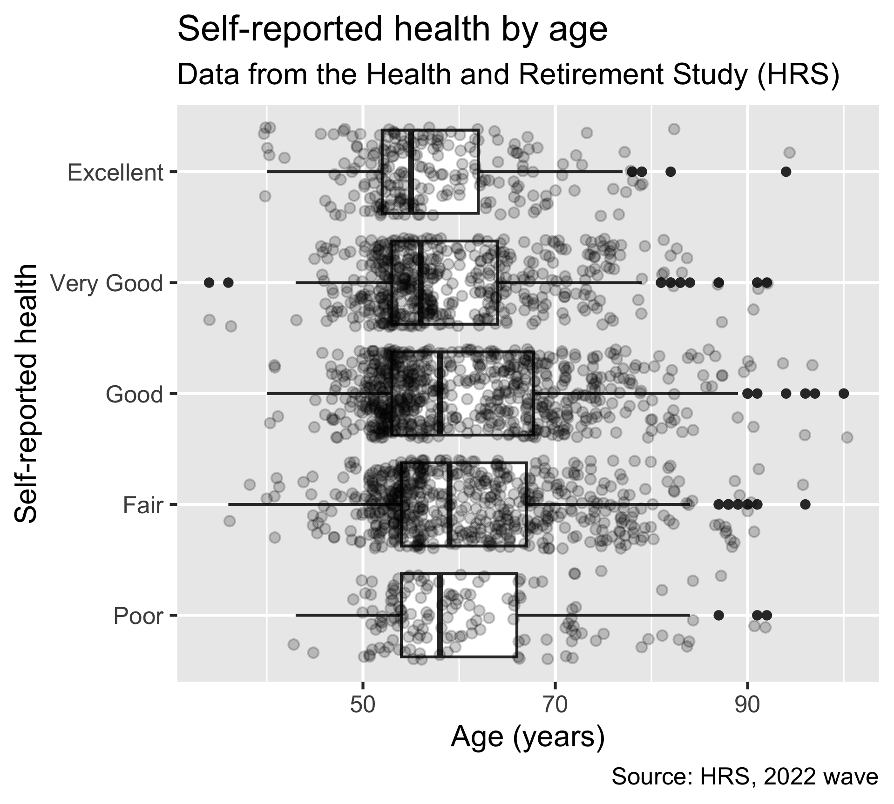
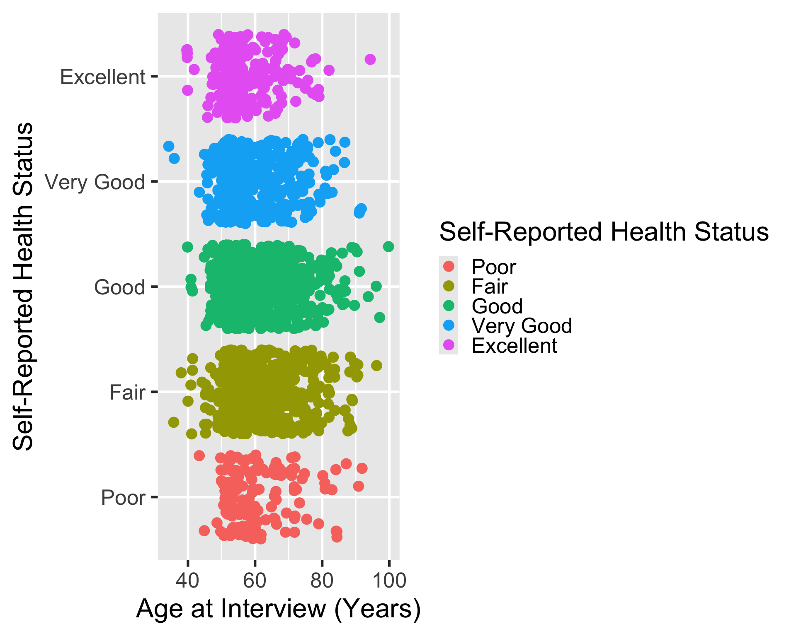
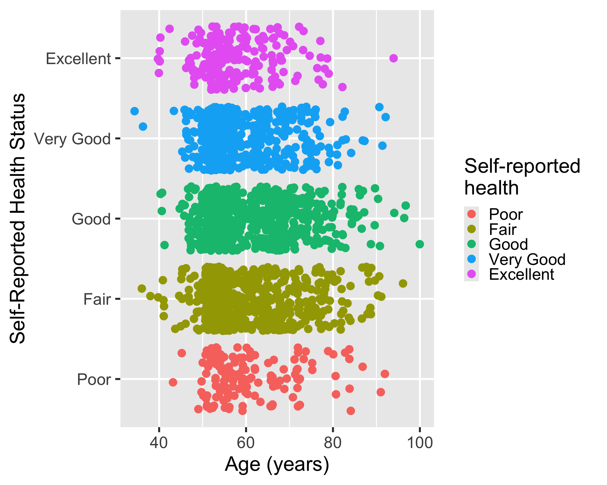
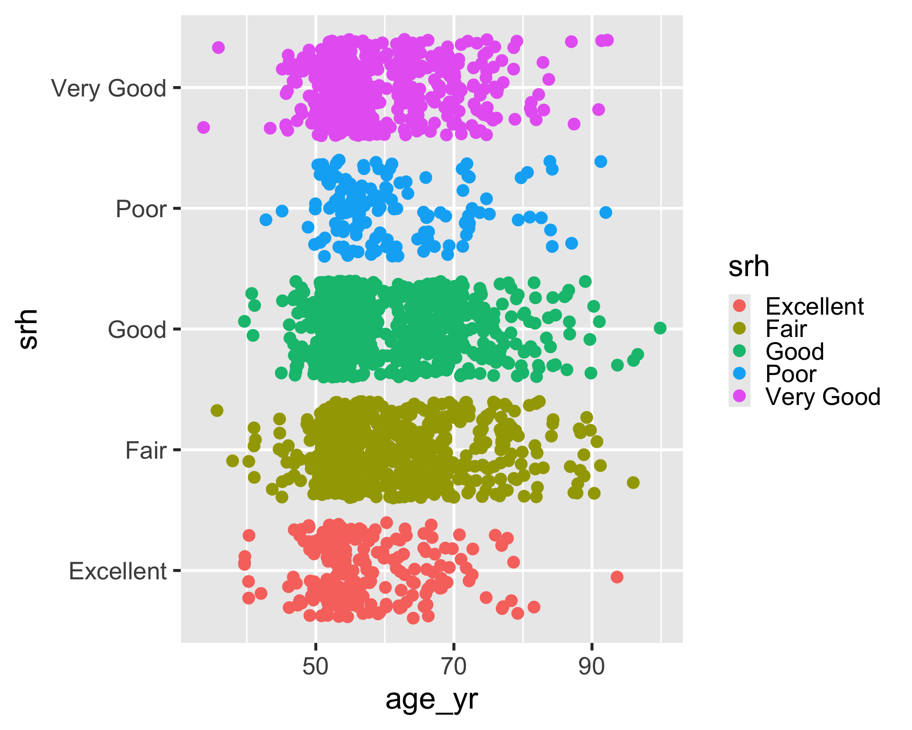
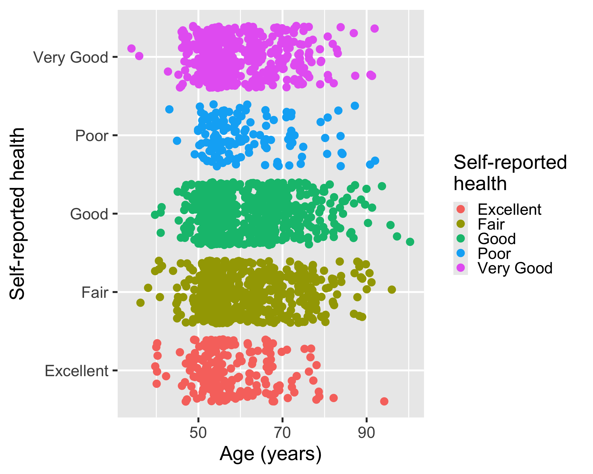
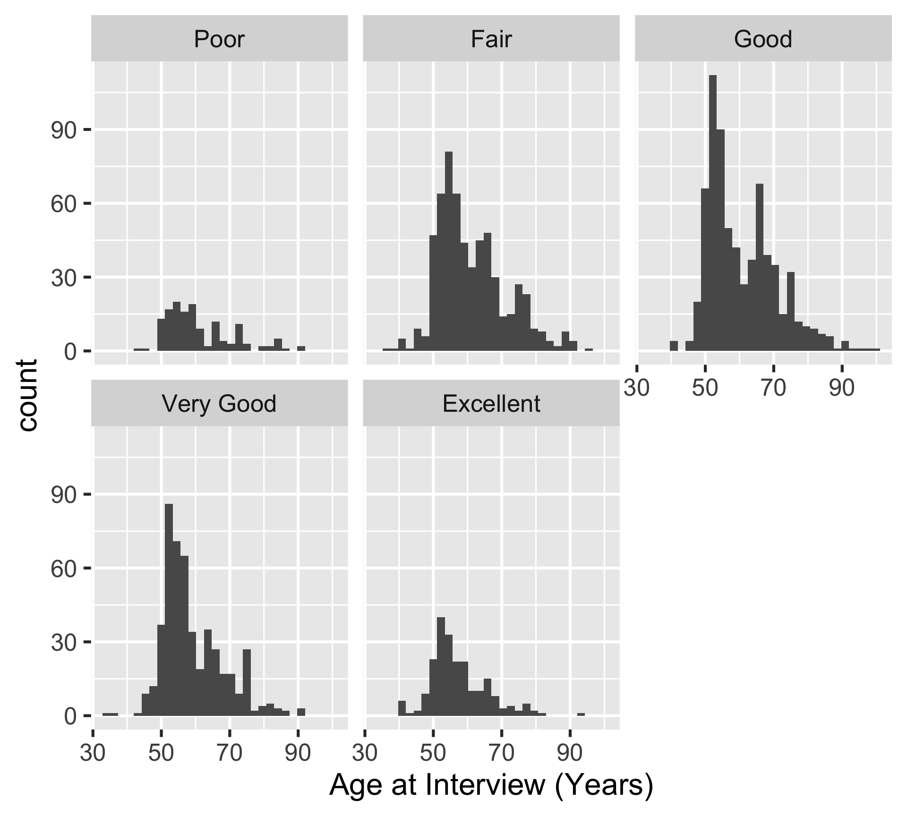
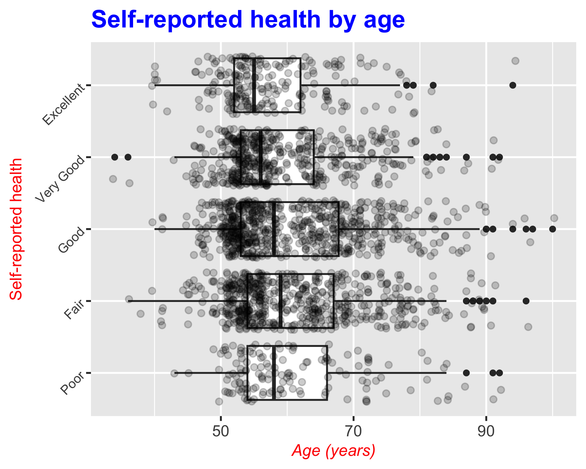
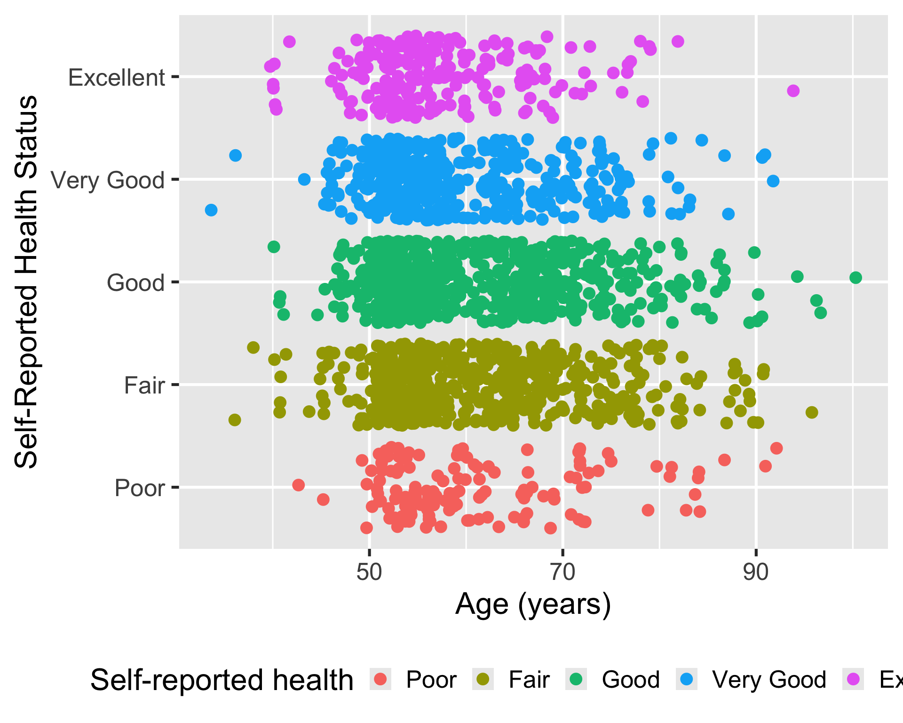

Warning: Missing `trust` will be set to FALSE by default for RDS in 2.0.0.Data visualization: Design choices
Recall: common components of ggplot2
- Common components of
ggplot2include:ggplot(): the main function to create a plotaes(): the function to specify the mapping of variables to axesgeom_*()orstat_*(): functions to add layers to the plotlabs(): the function to change labels of axes and titletheme(): the function to adjust non-data plot elements such as text size,
ggplot(
data = my_data,
mapping = aes(x = col1, y = col2)
) +
geom_*() +
labs() +
theme() In this lesson, we will focus on labels, themes, and facets.
Basic labelling using labs(): titles and axes
- We can assign many different labels to a plot using the
labs()function
We have the following options for labelling:
ggplot() +
geom_*() +
labs(
x = "Label for x-axis",
y = "Label for y-axis",
color = "Label for color legend",
fill = "Label for fill legend",
title = "Title for the whole plot",
subtitle = "Appears smaller, under the title",
caption = "Appears at the bottom of the plot, good for context"
) +
theme() - 1
- Typically all you need for a plot with two variables.
- 2
- Only needed if you have a legend for color or fill.
Example 1: New labels for our plot of age vs. self-reported health
- The following example adds all possible labels to the plot
- We do NOT need to add every possible label!!
ggplot(
hrs_00,
aes(x = age_yr, y = srh)
) +
geom_boxplot() +
geom_jitter(alpha = 0.2) +
labs(
x = "Age (years)",
y = "Self-reported health",
title = "Self-reported health by age",
subtitle = "Data from the Health and Retirement Study (HRS)",
caption = "Source: HRS, 2022 wave"
)
Example 2: Labels for color
- Note that the HRS dataset came with really nice labels embedded in the
.rdafile
Original labels
ggplot(
hrs_00,
aes(x = age_yr, y = srh, color = srh)
) +
geom_jitter()
Some label changes
ggplot(
hrs_00,
aes(x = age_yr, y = srh, color = srh)
) +
geom_jitter() +
labs(
x = "Age (years)",
color = "Self-reported \nhealth"
)- 1
- Take away “at Interview” for x-axis
- 2
-
Added
\nto condense the horizontal space that the legend title takes up.

Example 3: Same plot without our nice, pre-labelled variables
- If we use the
.xlsxfile, we lose the labels and the SRH level order.
hrs_xlsx <- import(here("data", "hrs_data.xlsx")) |> drop_na()Variable names are the labels
ggplot(
hrs_xlsx,
aes(x = age_yr, y = srh, color = srh)
) +
geom_jitter()
Some label changes
ggplot(
hrs_xlsx,
aes(x = age_yr, y = srh, color = srh)
) +
geom_jitter() +
labs(
x = "Age (years)",
y = "Self-reported health",
color = "Self-reported \nhealth"
)- 2
-
Added
\nto condense the horizontal space that the legend title takes up.

Facets
- Facets allow us to create multiple plots based on one or more discrete variables
- Discrete meaning categorical or whole number values
- We create multiple plots based on subsets of the data
- If each subset is determined by one variable, we use
facet_wrap() - If each subset is determined by two variables, we use
facet_grid()
- If each subset is determined by one variable, we use
Example 4: facet_wrap()
- We use
srhas the facet variable to create a histogram of age for each level of self-reported health
ggplot(
hrs_00,
aes(x = age_yr)
) +
geom_histogram() +
facet_wrap(~ srh)- 1
-
The
~indicates that we are faceting by a single variable,srh.
`stat_bin()` using `bins = 30`. Pick better value `binwidth`.
Example 5: facet_grid()
- We use
srhanddiabas the facet variables to create a histogram of age for each level of self-reported health and diabetes status
ggplot(
hrs_00,
aes(x = age_yr)
) +
geom_histogram() +
facet_grid(diab ~ srh)- 1
-
The
~indicates that we are faceting by two variables,diabandsrh. The first variable is used for the rows and the second variable is used for the columns.
`stat_bin()` using `bins = 30`. Pick better value `binwidth`.
Complete themes
- We can change the entire appearance of our plot with themes
- There are several set themes in
ggplot2: check out the page on complete themes for more!


Modifying themes
- We can change various components of a theme using the
theme()function
- We can change the look of the title, axes, facets, and legend
- We’re only going to touch the surface here!
Example 6: Modifying the title and axes
Adding different theme elements
ggplot(
hrs_00,
aes(x = age_yr, y = srh)
) +
geom_boxplot() +
geom_jitter(alpha = 0.2) +
labs(
x = "Age (years)",
y = "Self-reported health",
title = "Self-reported health by age",
) +
theme(
plot.title = element_text(size = 30, face = "bold", color = "blue"),
axis.title.x = element_text(size = 20, face = "italic", color = "red"),
axis.title.y = element_text(size = 20, color = "red"),
axis.text.y = element_text(size = 16, angle = 45)
)- 1
- Changes the title size, makes it bold, and changes the color to blue
- 2
- Changes the x-axis title size, makes it italic, and changes the color to red
- 3
- Changes the y-axis title size and color to red
- 4
- Changes the y-axis text size and rotates it 45 degrees

Example 7: Modifying the facets
Adding different theme elements to facet
ggplot(
hrs_00,
aes(x = age_yr)
) +
geom_histogram() +
facet_grid(diab ~ srh) +
theme(
strip.text.x = element_text(size = 16, color = "blue"),
strip.text.y = element_text(size = 16, color = "red")
)- 1
- Changes the facet column label size and color to blue
- 2
- Changes the facet row label size and color to red
`stat_bin()` using `bins = 30`. Pick better value `binwidth`.
Example 8: Modifying the legend
Adding different theme elements to the legend
ggplot(
hrs_00,
aes(x = age_yr, y = srh, color = srh)
) +
geom_jitter() +
labs(
x = "Age (years)",
color = "Self-reported health"
) +
theme(
legend.position = "bottom"
)- 1
- Moving the legend to the bottom of the plot instead of the right (default)

Saving plots
- We can save a plot as an image for later use: way better quality than taking a screenshot of the plot
- We need to assign the plot to an R object, and then we can save the R object as an image or pdf
- We use
ggsave()to save an R object (that’s a plot)
Let’s say I saved my plot from Example 8 as plot_age_srh:
plot_age_srh <- ggplot(
hrs_00,
aes(x = age_yr, y = srh, color = srh)
) +
geom_jitter() +
labs(
x = "Age (years)",
color = "Self-reported health"
) +
theme(
legend.position = "bottom"
)- 1
-
I assign the output (aka my plot) to
plot_age_srh
ggsave(
filename = here(
"images",
"plot_age_srh.png"
),
plot = plot_age_srh,
width = 5,
height = 3,
units = "in",
dpi = 200)- 1
-
We need to tell
Rwhere we want the image to end up in our files - 2
-
We give
Rthe name of the plot - 3
- We need to adjust the height and width to make the plot readable in the image
Wrap-up
- We went over additional layers for
ggplot2
- We can use labels to make plots more readable to viewers
- We can use facets to wrap plots by subsets of data
- We can use themes to change the overall appearance of a plot
- We can use
ggsave()to save plots as images
- Check out more on
ggplot2: it has a lot of capabilities!
Resources
ggplot2Cheatsheet in html formggplot2Cheatsheet in pdf form- List of complete themes
- Modify components of a theme
- Page on
ggsave() - Online textbook for
ggplot2: https://ggplot2-book.org/ - Another online resource for data visualization with
ggplot2: https://socviz.co/index.html#preface - Advanced Data Viz Class at Duke
- If you found these lessons on Data Visualization fun, I highly suggest you look into Dr. Bedrick’s Data Visualization course in the Spring!